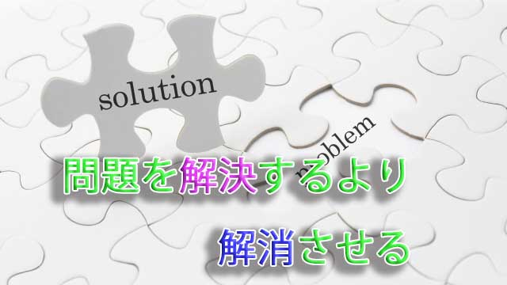

私たちは生きているだけで毎日のように問題事に遭遇する。
仕事上の問題、人間関係の問題、我が子の教育問題。それに加えて連日メディアを賑わす社会問題や戦争やテロなど国境を超えた問題など。
そうして私たちは「問題」がある以上問題を解決しなければならないと即座に考える。
そう、問題は解決させなければならないというのが私たちの条件反射的思考なのだ。
しかしその「解決しなければならない」という姿勢そのものが問題を大きくしているとしたらどうだろう。
私たちは「問題」を発見すると、何とか解決しなきゃ大変だという恐怖や不安に駆り立てられて「解決策」を求めて動き出す。
ここに落とし穴がある。自分にとって「不都合だから何とかしなきゃ」という不安がある時点で自分の立場に固執しているからだ。視野が狭くなっている。その結果「解決欲求」自体が自分を守りたい、自説の正しさを主張したい、邪魔者を取り除きたいという思いの現れでしかないことになり、問題は複雑化する。
問題を自分の都合の良いように解決しようとする限り本当の解決はない。
個人であれ集団であれ「問題」はその人やグループ全体に何らかの偏りや思い込み、錯誤があることを教えていることが多い。それに気づき自らの軌道を修正するために「問題は生まれてくれたのだ」と認識することで自ずと解決する。
大切なことは問題を個人的にとらえ過ぎないこと。冷静になって「問題」が自分及び自分たちに何を教えようとしているのかまず考えてみることだ。視野を広げて全体をパノラマのように眺望することで、問題の真の所在が明らかになる。そうすると解決も簡単になる。
それは「真実」と「感情や思考」を分けることである。
私たちは起こっている出来事（問題ごと）そのものより、「このまま行ったら次にはこんなことが起こるのではないか」と推測したり「あの人のせいでこんな事態になった」と誰かのせいにしたり、事実そのものより思考や感情を勝手に関連付けて問題を大きくしている。
多くの人は「事実」そのものを見ているのではない。関連する感情、推測、思い込みのほうに気をとられている。
だから事実を事実と見て、起こってもいない出来事や真偽不明の推測をせず「ありのまま」を見る姿勢にあること。そうすれば問題もひとつの出来事であり、「学ぶべきチャンスと捉えることができるだろう。
問題と向き合うことで問題を超える
また一概に「問題」といっても、ある人には大きな問題でも別の人には小さな問題だったり、問題とさえ見なさないこともある。つまり何かを問題と見なすかどうかはその人次第ということになる。
仮に難易度がレベル3の問題があって、その人のレベルが3～4ならそれは大きな問題となるだろう。しかしレベルが4～5の人にとってはそれほど大きな問題ではないし、10レベルの人にとってはごく小さな問題となる。
もし50とか100レベルにある人なら、問題（レベル3という）そのものが消えてしまうだろう。
（言うまでもなく、この場合のレベルの高さとは人間の優劣ではなく、経験値や視野の広さからくる器の大きさを意味している。）
だから「問題」というのは相対的なものだということ。
もし今目の前に自分を悩ませる問題があるのなら、自分のレベルがその問題とつり合っていることを自覚し「解決策」をアレコレ考えるより問題と向き合い一体化するほうが良い。解決を焦る行為は問題からの逃避だからだ。逃げるのではなく向き合う。
向き合うというのは、その問題に身体ごとドップリ浸かりそこからもたらされる感情 －たいていはネガティブな感情だろうが－ を十分味わい尽くすという態度だ。問題に寄り添い、問題が自分に語りかける声を聴く。そこには必ず学ぶものがある。それに気づくと不思議なことに問題は自ずと消えていく。
消え方は様々だ。
突如環境が変わったり、当事者の態度が変わったりなど固着していた状況が動き出すことで問題もいつの間にか解決していたりする。
これは問題と向き合い問題から学んだことで自分が一段レベルアップしたからだ。
言葉を換えれば、問題は自分の中にある偏った物の見方や固定観念、古い価値観など独自の「ゆがみ」に気づかせ正すために現れたと言える。つまり内面の問題が外側の問題として投影されたということ。そこに気づかない限り「同じ問題」は形を変えながらずっと起こり続けるだろう。
よく職場の人間関係が不満だからと職を変える人がいるが、どこへ行っても同じ問題を抱え苦悩する。恋愛でもパートナーとの間にいつも同じようなトラブルを起こす人がいる。
たとえ環境を変え相手を取り替えようと、外側に「問題」を見ている限り本質的な解決には至らない。
外側に解決を求めるのではなく、内側に働きかけ自分の中の「ゆがみ」「偏った見方」に気づいていく。
これを続けていくことで問題は出来事に変わる。出来事は起こり続けるがそれはもはや問題ではなくプロセスにしか見えない。
そうして私たちは問題を超えることができるのだ。
それは「解決」を目指さずして「問題そのもの」が解消していく様を見るということだ。